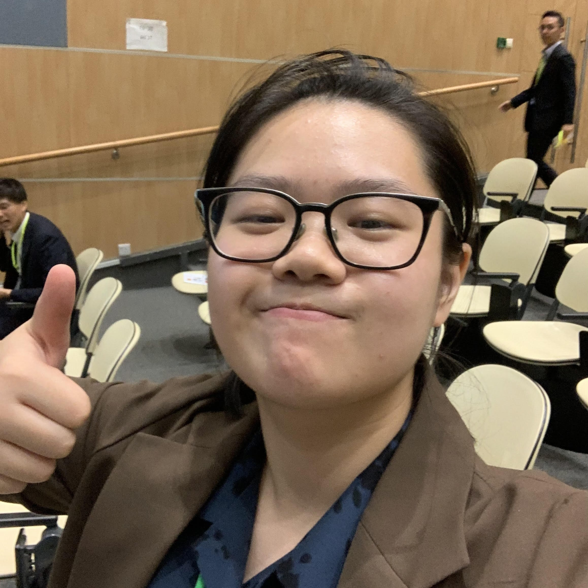

Do Thuy Mien Thao
H2 Computing Student
About
My name is Thao. I am currently 17 and just started my J1 journey in Singapore. I have many different interest and hobbies. Some of them include playing the guitar, solving riddles, building miniatures, and coffee. Like many, I have a strong bond with music, with some of my all-time favourties being f(x), Sabrina Carpenter, and Rina Sawayama.
Education
Thuc Nghiem Primary School (2013-2018)
Notable events and achievements
- Language Link English Olympic - 2018
- Basketball (2013-2018)
Hanoi-Amsterdam Highschool for the Gifted (2018-2021)
Notable events and achievements
- World Scholar's Cup - 2019
- IGCSE - 2021
- Orientation - 2020/2021
Crescent Girls' School (2022-2023)
Notable events and achievements
- AVA club (2022-2023)
- Singapore Junior Chemistry Olympiad - 2023
- Singapore and Asian Schools Math Olympiad - 2023
- Singapore Math Kangaroo Contest - 2023
- O Levels - 2023
Anderson Serangoon Junior College (2024-present)
Notable events and achievements
TBA
Skills
- Guitar
- Riddle solving
- Rubik's cube solving
- Cooking
- HTML coding
Activity
I decided to take up computing as it is a very versatile and valuable skill to have in the modern world. In the future, I have hopes of being a filmmaker and I know that the skills I learn from this course will help me in many things such as creating effects or simply designing a promotional website.